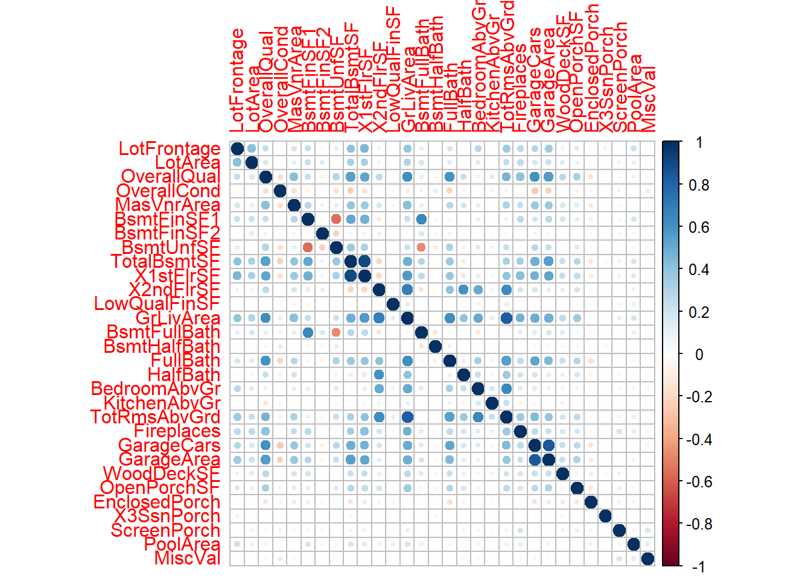
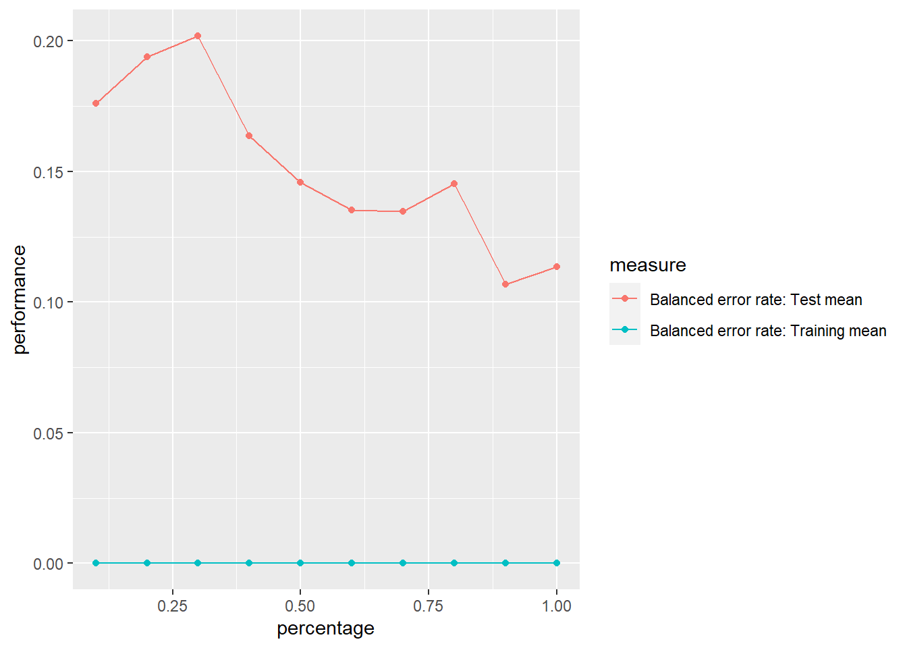
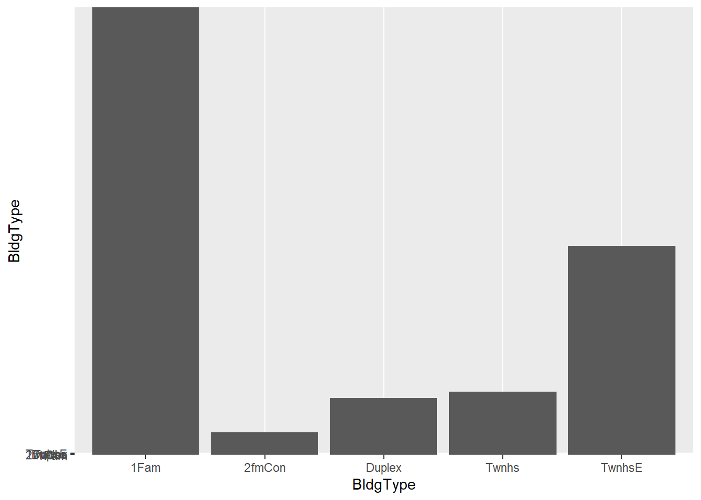
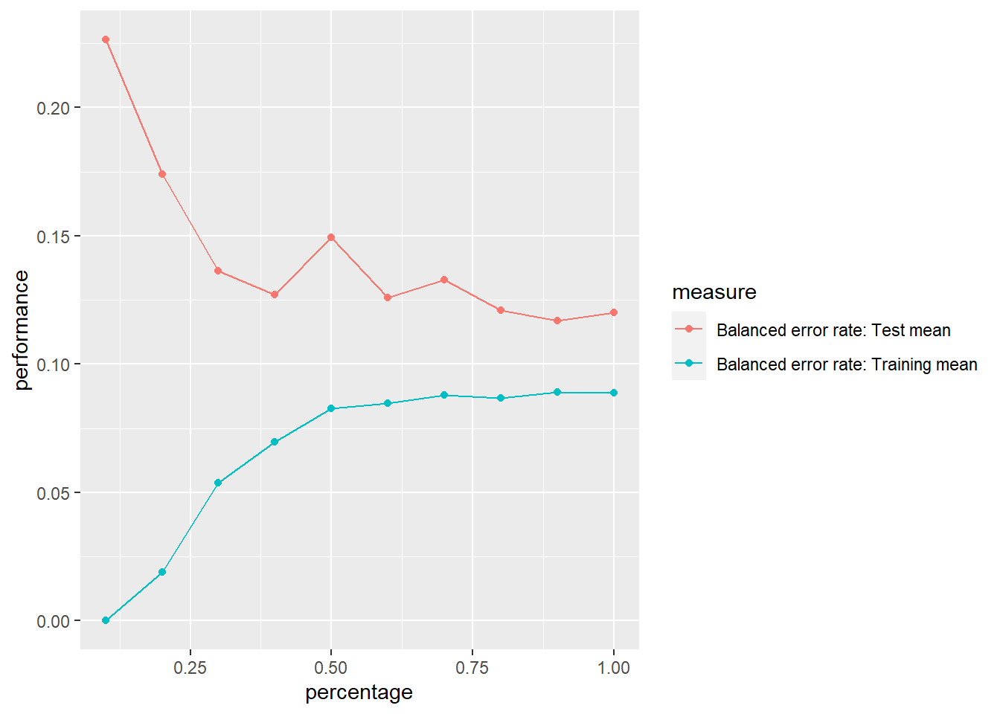
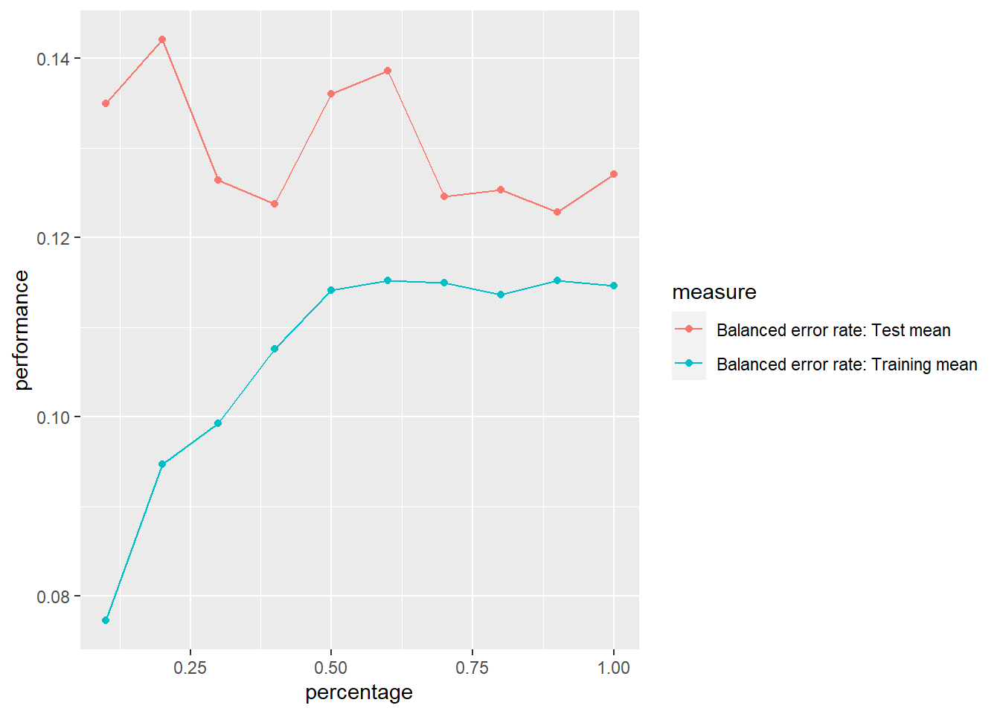
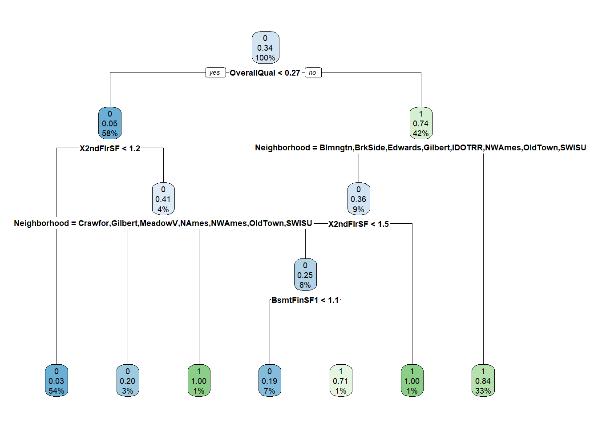

set.seed(123)
datos <- read.csv("train.csv")MD_HDT6
1. Dvisión de variables numéricas y obtención de data de prueba y entrenamiento
1.1 División de variables
1.2 Analisis de NA’s
faltantes_por_col <- colSums(is.na(datos))
faltantes_por_col
0 0 0 0 0
0 0 0 0 0
0 0 0 0 0
0 0 0 0 0
0 0 0 0 0
0 0 0 0 0
Id MSSubClass MSZoning Street
0 0 0 0 0
Alley LotShape LandContour Utilities LotConfig
1110 0 0 0 0
LandSlope Neighborhood Condition1 Condition2 BldgType
0 0 0 0 0
HouseStyle YearBuilt YearRemodAdd RoofStyle RoofMatl
0 0 0 0 0
Exterior1st Exterior2nd MasVnrType ExterQual ExterCond
0 0 0 0 0
Foundation BsmtQual BsmtCond BsmtExposure BsmtFinType1
0 31 31 32 31
BsmtFinType2 Heating HeatingQC CentralAir Electrical
32 0 0 0 1
KitchenQual Functional FireplaceQu GarageType GarageYrBlt
0 0 596 74 74
GarageFinish GarageQual GarageCond PavedDrive PoolQC
74 74 74 0 1189
Fence MiscFeature MoSold YrSold SaleType
967 1156 0 0 0
SaleCondition
0 Se puede observar que PoolQC tiene demasiados datos faltantes, al igual que Fence, Alley, MiscFeature y FireplaceQu. Por lo tanto estas columnas no se usaran.
datos <- select(datos, -Id, -PoolQC, -Fence, -Alley, -MiscFeature, -FireplaceQu)
datos <- na.omit(datos)1.2 Eliminación de variables no significativas
datos <- select(datos, -GarageYrBlt, -SaleType, -SaleCondition, -MoSold, -YrSold, -YearBuilt, -Condition2, -MSSubClass, MSZoning, -LotShape, -YearRemodAdd, -Exterior1st, -BsmtFinType1, -BsmtFinType2, -GarageQual, -GarageCond, -RoofMatl, -Condition1, -BsmtQual, -Exterior2nd, -RoofStyle, -GarageType)Se observaron diferentes variables que no aportaban al modelo, por lo tanto se decidió eliminarlas.
1.3 Creación de clasificación de la variable de precios
p33 <- quantile(datos$SalePrice, 0.33)
p66 <- quantile(datos$SalePrice, 0.66)
datosT <- datos
datosT <- datosT %>%
mutate(clasificacion = ifelse(datosT$SalePrice < p33, "Economicas",
ifelse(datosT$SalePrice < p66, "Intermedias",
"Caras"
)
))
datosT$clasificacion <- as.factor(datosT$clasificacion)1.4 Creación de variables dicotómicas
library(fastDummies)
datos_con_dummy <- dummy_cols(datosT, select_columns = c("clasificacion"))
datos_con_dummy <- select(datos_con_dummy, -clasificacion, -clasificacion_Economicas, -clasificacion_Intermedias)
datos_con_dummy$clasificacion_Caras <- datos_con_dummy$clasificacion_Caras
datos_con_dummy <- datos_con_dummy %>% mutate_at(c("clasificacion_Caras"), as.factor)2. Datos de entrenamiento y prueba
porcentaje <- 0.7
set.seed(123)
datos_num <- select(datos_con_dummy, -SalePrice)
datos_num <- select(datos_con_dummy, -Utilities)
corte <- sample(nrow(datos_num), nrow(datos_num) * porcentaje)
train <- datos_num[corte, ]
test <- datos_num[-corte, ]3. Modelo de regresión logística para saber si vivienda es cara o no.
3.1 Modelo con todas las variables.
Rprof(memory.profiling = TRUE)
cv <- trainControl(method = "cv", number = 10)
modelo_todas_cv <- caret::train(clasificacion_Caras ~ ., data = train, method = "glm", family = binomial, trControl = cv)
Rprof(NULL)
pm1 <- summaryRprof(memory = "both")
AIC1 <- AIC(modelo_todas_cv$finalModel)
BIC1 <- BIC(modelo_todas_cv$finalModel)model_summary <- summary(modelo_todas_cv)
print(model_summary, signif.stars = TRUE, digits = 3)
Call:
NULL
Deviance Residuals:
Min 1Q Median 3Q Max
-1.06e-04 -2.00e-08 -2.00e-08 2.00e-08 9.33e-05
Coefficients: (9 not defined because of singularities)
Estimate Std. Error z value Pr(>|z|)
(Intercept) 1.88e+02 4.75e+07 0 1
SalePrice 2.39e+02 7.86e+04 0 1
LotFrontage 9.51e+00 4.46e+04 0 1
LotArea -2.29e+01 7.81e+04 0 1
OverallQual -5.54e+00 4.02e+04 0 1
OverallCond -7.62e+00 3.32e+04 0 1
MasVnrArea -9.07e+00 2.09e+04 0 1
BsmtFinSF1 -2.50e+01 7.21e+04 0 1
BsmtFinSF2 -4.51e+00 3.55e+04 0 1
BsmtUnfSF -2.26e+01 6.36e+04 0 1
TotalBsmtSF NA NA NA NA
X1stFlrSF -2.54e+01 5.60e+04 0 1
X2ndFlrSF 1.50e+01 8.01e+04 0 1
LowQualFinSF 1.74e+01 3.64e+04 0 1
GrLivArea NA NA NA NA
BsmtFullBath -3.98e+00 1.45e+04 0 1
BsmtHalfBath 1.19e+00 1.84e+04 0 1
FullBath -4.26e+00 3.71e+04 0 1
HalfBath 5.39e+00 5.90e+04 0 1
BedroomAbvGr 2.73e+00 2.87e+04 0 1
KitchenAbvGr 1.32e+01 1.02e+05 0 1
TotRmsAbvGrd -1.24e+00 5.26e+04 0 1
Fireplaces 5.89e+00 2.11e+04 0 1
GarageCars 8.58e+00 5.24e+04 0 1
GarageArea 5.29e+00 4.83e+04 0 1
WoodDeckSF 4.64e-01 1.82e+04 0 1
OpenPorchSF -6.06e+00 3.43e+04 0 1
EnclosedPorch -1.45e+01 1.93e+04 0 1
X3SsnPorch -1.41e+00 1.57e+04 0 1
ScreenPorch -1.27e+01 2.40e+04 0 1
PoolArea -7.33e-01 1.42e+04 0 1
MiscVal 9.27e+00 1.79e+04 0 1
MSZoningFV -9.92e+01 7.33e+05 0 1
MSZoningRH -1.28e+02 6.39e+05 0 1
MSZoningRL -1.29e+02 6.58e+05 0 1
MSZoningRM -1.21e+02 5.79e+05 0 1
StreetPave 7.00e+01 6.54e+05 0 1
LandContourHLS -5.57e+01 2.35e+05 0 1
LandContourLow -3.29e+01 6.51e+05 0 1
LandContourLvl -4.56e+01 2.05e+05 0 1
LotConfigCulDSac 3.15e+00 2.57e+05 0 1
LotConfigFR2 -3.51e+00 7.46e+04 0 1
LotConfigFR3 -2.97e+01 4.78e+05 0 1
LotConfigInside -1.87e+01 4.09e+04 0 1
LandSlopeMod 2.01e+01 1.81e+05 0 1
LandSlopeSev 8.67e+01 4.95e+05 0 1
NeighborhoodBlueste 7.44e+01 3.42e+05 0 1
NeighborhoodBrDale 2.00e+02 2.14e+05 0 1
NeighborhoodBrkSide 6.93e+01 2.79e+05 0 1
NeighborhoodClearCr 5.35e+01 2.00e+05 0 1
NeighborhoodCollgCr 5.80e+01 1.64e+05 0 1
NeighborhoodCrawfor 4.08e+01 2.60e+05 0 1
NeighborhoodEdwards 1.64e+01 1.53e+05 0 1
NeighborhoodGilbert 1.62e+01 1.64e+05 0 1
NeighborhoodIDOTRR 7.26e+01 3.43e+05 0 1
NeighborhoodMeadowV 1.04e+02 3.29e+05 0 1
NeighborhoodMitchel 6.28e+01 2.32e+05 0 1
NeighborhoodNAmes 6.57e+01 1.62e+05 0 1
NeighborhoodNoRidge 4.48e+01 2.40e+05 0 1
NeighborhoodNPkVill 1.10e+02 2.08e+05 0 1
NeighborhoodNridgHt 4.08e+01 1.42e+05 0 1
NeighborhoodNWAmes 6.04e+01 1.56e+05 0 1
NeighborhoodOldTown 1.06e+02 3.01e+05 0 1
NeighborhoodSawyer 8.74e+01 1.67e+05 0 1
NeighborhoodSawyerW 4.65e+01 1.51e+05 0 1
NeighborhoodSomerst 1.72e+01 2.71e+05 0 1
NeighborhoodStoneBr 5.92e+01 1.41e+05 0 1
NeighborhoodSWISU 7.59e+01 2.60e+05 0 1
NeighborhoodTimber 7.14e+01 1.65e+05 0 1
NeighborhoodVeenker -8.37e+01 4.74e+05 0 1
BldgType2fmCon -2.80e+01 4.36e+05 0 1
BldgTypeDuplex -5.14e+01 5.51e+05 0 1
BldgTypeTwnhs 8.32e+00 1.66e+05 0 1
BldgTypeTwnhsE 5.80e+00 1.10e+05 0 1
HouseStyle1.5Unf 6.86e+01 3.68e+05 0 1
HouseStyle1Story 7.68e+01 1.69e+05 0 1
HouseStyle2.5Fin -2.07e+02 3.74e+05 0 1
HouseStyle2.5Unf -1.41e+02 7.50e+05 0 1
HouseStyle2Story -2.64e+01 1.30e+05 0 1
HouseStyleSFoyer 6.30e+01 2.32e+05 0 1
HouseStyleSLvl 1.53e+01 1.76e+05 0 1
MasVnrTypeBrkFace 4.07e+01 3.94e+05 0 1
MasVnrTypeNone 3.04e+01 3.99e+05 0 1
MasVnrTypeStone 5.48e+01 3.93e+05 0 1
ExterQualFa 9.46e+01 6.38e+05 0 1
ExterQualGd 4.06e+01 2.69e+05 0 1
ExterQualTA 4.22e+01 2.95e+05 0 1
ExterCondFa 8.27e+01 4.75e+07 0 1
ExterCondGd 7.32e+01 4.75e+07 0 1
ExterCondPo NA NA NA NA
ExterCondTA 7.02e+01 4.75e+07 0 1
FoundationCBlock -3.26e+01 1.77e+05 0 1
FoundationPConc -3.17e+01 1.84e+05 0 1
FoundationSlab NA NA NA NA
FoundationStone 1.45e+01 1.28e+06 0 1
FoundationWood 1.94e+00 4.01e+05 0 1
BsmtCondGd 4.12e+01 3.04e+05 0 1
BsmtCondPo 1.58e+02 6.03e+05 0 1
BsmtCondTA 2.43e+01 2.74e+05 0 1
BsmtExposureGd 2.20e+01 5.24e+04 0 1
BsmtExposureMn 8.73e+00 5.02e+04 0 1
BsmtExposureNo 8.67e+00 2.75e+04 0 1
HeatingGasA -2.84e+02 6.62e+05 0 1
HeatingGasW -2.44e+02 7.08e+05 0 1
HeatingGrav NA NA NA NA
HeatingOthW NA NA NA NA
HeatingWall NA NA NA NA
HeatingQCFa -3.18e+01 1.19e+05 0 1
HeatingQCGd -1.81e+01 5.53e+04 0 1
HeatingQCPo 1.61e+02 4.74e+05 0 1
HeatingQCTA 9.30e+00 6.37e+04 0 1
CentralAirY -2.53e+01 2.55e+05 0 1
ElectricalFuseF 1.96e+01 2.83e+05 0 1
ElectricalFuseP 1.74e+01 1.20e+06 0 1
ElectricalMix NA NA NA NA
ElectricalSBrkr -2.18e+01 1.04e+05 0 1
KitchenQualFa 6.51e+01 2.97e+05 0 1
KitchenQualGd 5.01e+01 2.08e+05 0 1
KitchenQualTA 6.61e+01 2.27e+05 0 1
FunctionalMaj2 -2.56e+01 4.58e+05 0 1
FunctionalMin1 -3.01e+01 3.65e+05 0 1
FunctionalMin2 -2.85e+01 4.15e+05 0 1
FunctionalMod -1.06e+02 9.63e+05 0 1
FunctionalSev NA NA NA NA
FunctionalTyp -3.22e+01 2.40e+05 0 1
GarageFinishRFn -8.06e+00 4.24e+04 0 1
GarageFinishUnf 1.87e+00 5.79e+04 0 1
PavedDriveP -2.09e+01 2.47e+05 0 1
PavedDriveY -2.54e+01 1.02e+05 0 1
(Dispersion parameter for binomial family taken to be 1)
Null deviance: 9.8328e+02 on 764 degrees of freedom
Residual deviance: 1.1399e-07 on 645 degrees of freedom
AIC: 240
Number of Fisher Scoring iterations: 25El modelo indica la significancia de las variable con un *
variables_significativas <- model_summary$coefficients[model_summary$coefficients[, 4] < 0.01, , drop = FALSE]
columnas_significativas <- rownames(variables_significativas[order(abs(variables_significativas[, 1]), decreasing = TRUE), ])
columnas_significativasNULLComo se puede observar al tener el modelo con todas las variables se obteiene que ninguna variable es significativa, por lo tanto se procedió a realizar el modelo con las variables numericas para observar si estas tienen más significancia. Previo a esto se realizó un análisis de correlación entre las variables y se observó que tan bien se ajusta este modelo realizado.
3.1.1 Análisis de correlación y ajuste de modelo
datos_cor <- datos_con_dummy[, numeric_variables]
datos_cor <- select(datos_cor, -SalePrice)
correlacion <- cor(datos_cor)
corrplot(correlacion)
Existe correlación entre las siguientes variables:
- LotFrontage: LotArea, TotalBsmtSF, X1stFlrSF
- LotArea: LotFrontage, TotalBsmtSF, GrLivArea
- OverallQual: TotalBsmtSF, X1stFlrSF, GrLivArea, FullBath, GarageCars, GarageArea
- BsmtFinSF1: BsmtUnfSF, BsmtFullBath
- BsmtUnfSF: BsmtFinSF1
- TotalsmtSF: X1stFlrSF
- X1stFlrSF: TotalBsmtSF
- X2ndFlrSF: GrLivArea
- GrLivArea: X2ndFlrSF, TotRmsAbvGrd
- BsmtFullBath: BsmtFinSF1
- BedRoomAvGr: TotRmsAbvGr
- TotRmsAbvGrd: OverallQual, X2ndFlrSF, FullBath, BedroomAbvGr
- FirePlaces: OverallQual, X1stFlrSF, GrLivArea
- GarageCars: OverallQual, TotalBsmtSF, X1stFlrSF, GrLivArea, FullBath, TotRmsAbvGrd, GarageArea
- GarageArea: OverallQual, TotalBsmtSF, X1stFlrSF, GrLivArea, FullBath, TotRmsAbvGrd, GarageCars
test_1 <- select(test, -clasificacion_Caras)
pred <- predict(modelo_todas_cv, newdata = test_1)Warning in predict.lm(object, newdata, se.fit, scale = 1, type = if (type == :
prediction from a rank-deficient fit may be misleadingcaret::confusionMatrix(as.factor(pred), as.factor(test$clasificacion_Caras))Confusion Matrix and Statistics
Reference
Prediction 0 1
0 206 9
1 12 102
Accuracy : 0.9362
95% CI : (0.9041, 0.9601)
No Information Rate : 0.6626
P-Value [Acc > NIR] : <2e-16
Kappa : 0.8582
Mcnemar's Test P-Value : 0.6625
Sensitivity : 0.9450
Specificity : 0.9189
Pos Pred Value : 0.9581
Neg Pred Value : 0.8947
Prevalence : 0.6626
Detection Rate : 0.6261
Detection Prevalence : 0.6535
Balanced Accuracy : 0.9319
'Positive' Class : 0
Parece ser que se tiene un buen modelo porque se tiene un accuracy de 0.87. La sensitividad y especificidad son buenas, de 0.89 y 0.83 respectivamente. Algo importante que se debe mencionar es que AIC es bastante alto, de 2717. Como se indicó, el modelo parece ajustarse bien a los datos, pero es necesario analizar el overfitting.
# train <- train[, numeric_variables2]
datos.task <- makeClassifTask(data = train, target = "clasificacion_Caras")Warning in makeTask(type = type, data = data, weights = weights,
blocking = blocking, : Empty factor levels were dropped for columns:
ExterCond,Foundation,Heating,Functionalrin2 <- makeResampleDesc(method = "CV", iters = 10, predict = "both")
lrn <- makeLearner("classif.multinom", predict.type = "prob", trace = FALSE)
lc2 <- generateLearningCurveData(
learners = lrn, task = datos.task,
percs = seq(0.1, 1, by = 0.1),
measures = list(ber, setAggregation(ber, train.mean)), resampling = rin2,
show.info = FALSE
)
plotLearningCurve(lc2, facet = "learner")
Al tener el accuracy con un 86% y al observar las curvas de aprendizaje se puede concluir que el modelo tiene overfitting. La curva de balance de error en training siempre está en 0 y nunca converge con la curva de test. Con un accuracy tan alto y pocas variables significativas, se concluye lo mencionado.
3.2 Modelo con variables numéricas
3.2.1 Creación de modelo
porcentaje <- 0.7
set.seed(123)
numeric_variables2 <- c("LotFrontage", "LotArea", "OverallQual", "OverallCond", "MasVnrArea", "BsmtFinSF1", "BsmtFinSF2", "BsmtUnfSF", "TotalBsmtSF", "X1stFlrSF", "X2ndFlrSF", "LowQualFinSF", "GrLivArea", "BsmtFullBath", "BsmtHalfBath", "FullBath", "HalfBath", "BedroomAbvGr", "KitchenAbvGr", "TotRmsAbvGrd", "Fireplaces", "GarageCars", "GarageArea", "WoodDeckSF", "OpenPorchSF", "EnclosedPorch", "X3SsnPorch", "ScreenPorch", "PoolArea", "MiscVal", "clasificacion_Caras")
# datos_num <- select(datos_con_dummy, -SalePrice)
# datos_num <- select(datos_con_dummy, -Utilities)
datos_num <- datos_con_dummy[, numeric_variables2]
corte <- sample(nrow(datos_num), nrow(datos_num) * porcentaje)
train <- datos_num[corte, ]
test <- datos_num[-corte, ]Rprof(memory.profiling = TRUE)
cv <- trainControl(method = "cv", number = 10)
modelo_todas_cv <- caret::train(clasificacion_Caras ~ ., data = train, method = "glm", family = binomial, trControl = cv)
Rprof(NULL)
pm2 <- summaryRprof(memory = "both")
AIC2 <- AIC(modelo_todas_cv$finalModel)
BIC2 <- BIC(modelo_todas_cv$finalModel)model_summary <- summary(modelo_todas_cv)
print(model_summary, signif.stars = TRUE, digits = 3)
Call:
NULL
Deviance Residuals:
Min 1Q Median 3Q Max
-6.468 -0.235 -0.044 0.124 2.430
Coefficients: (2 not defined because of singularities)
Estimate Std. Error z value Pr(>|z|)
(Intercept) -2.5159 0.2754 -9.13 < 2e-16 ***
LotFrontage 0.0656 0.1780 0.37 0.7125
LotArea 0.4336 0.2955 1.47 0.1423
OverallQual 2.1617 0.3248 6.66 2.8e-11 ***
OverallCond 0.2925 0.1995 1.47 0.1426
MasVnrArea -0.2773 0.2099 -1.32 0.1866
BsmtFinSF1 1.1210 0.5076 2.21 0.0272 *
BsmtFinSF2 0.3277 0.2044 1.60 0.1088
BsmtUnfSF 1.2663 0.4724 2.68 0.0074 **
TotalBsmtSF NA NA NA NA
X1stFlrSF 0.5993 0.4476 1.34 0.1806
X2ndFlrSF 0.9837 0.3927 2.50 0.0123 *
LowQualFinSF -0.1850 0.3094 -0.60 0.5500
GrLivArea NA NA NA NA
BsmtFullBath 0.5332 0.2290 2.33 0.0199 *
BsmtHalfBath 0.1198 0.1493 0.80 0.4223
FullBath 0.7172 0.2474 2.90 0.0037 **
HalfBath 0.3198 0.2341 1.37 0.1719
BedroomAbvGr -0.0549 0.2476 -0.22 0.8244
KitchenAbvGr -0.4582 0.2981 -1.54 0.1243
TotRmsAbvGrd 0.1111 0.3664 0.30 0.7616
Fireplaces 0.0876 0.1772 0.49 0.6208
GarageCars 0.3489 0.4230 0.82 0.4095
GarageArea 0.6500 0.4069 1.60 0.1102
WoodDeckSF 0.0218 0.1625 0.13 0.8930
OpenPorchSF 0.1952 0.1622 1.20 0.2290
EnclosedPorch -0.3416 0.2063 -1.66 0.0977 .
X3SsnPorch 0.1160 0.1105 1.05 0.2936
ScreenPorch -0.0355 0.1558 -0.23 0.8197
PoolArea -0.9021 0.3051 -2.96 0.0031 **
MiscVal 0.3412 0.1542 2.21 0.0269 *
---
Signif. codes: 0 '***' 0.001 '**' 0.01 '*' 0.05 '.' 0.1 ' ' 1
(Dispersion parameter for binomial family taken to be 1)
Null deviance: 983.28 on 764 degrees of freedom
Residual deviance: 326.48 on 736 degrees of freedom
AIC: 384.5
Number of Fisher Scoring iterations: 7Como se puede observar el modelo indica la significancia de las variable con un *, pero nosotros designamos las varibales que tienen un valor de significaia menor a 0.01, las cuales son:
variables_significativas <- model_summary$coefficients[model_summary$coefficients[, 4] < 0.01, , drop = FALSE]
columnas_significativas <- rownames(variables_significativas[order(abs(variables_significativas[, 1]), decreasing = TRUE), ])
columnas_significativas[1] "(Intercept)" "OverallQual" "BsmtUnfSF" "PoolArea" "FullBath" Como se puede hay varias variables que son significativas para el modelo, con lo que teniendo eliminadas las columnas que no aportan al modelo. Hay otras variables como TotalBsmtSF y GrLivArea que no aportan nada al modelo.
3.2.2 Análisis de ajuste de modelo
test_1 <- select(test, -clasificacion_Caras)
pred <- predict(modelo_todas_cv, newdata = test_1)Warning in predict.lm(object, newdata, se.fit, scale = 1, type = if (type == :
prediction from a rank-deficient fit may be misleadingcf1 <- caret::confusionMatrix(as.factor(pred), as.factor(test$clasificacion_Caras))Parece ser que se tiene un buen modelo porque se tiene un accuracy de 0.89. La sensitividad y especificidad son buenas, de 0.89 y 0.83 respectivamente. Algo importante que se debe mencionar es que AIC es bastante alto, de 2717. Como se indicó, el modelo parece ajustarse bien a los datos, pero es necesario analizar el overfitting.
datos.task <- makeClassifTask(data = train, target = "clasificacion_Caras")
rin2 <- makeResampleDesc(method = "CV", iters = 10, predict = "both")
lrn <- makeLearner("classif.multinom", predict.type = "prob", trace = FALSE)
lc2 <- generateLearningCurveData(
learners = lrn, task = datos.task,
percs = seq(0.1, 1, by = 0.1),
measures = list(ber, setAggregation(ber, train.mean)), resampling = rin2,
show.info = FALSE
)
plotLearningCurve(lc2, facet = "learner")
Al tener el accuracy con un 89% y al observar las curvas de aprendizaje se puede concluir que el modelo tiene NO tiene overfitting. La curva de balance de error en training y de test convergen en cierto punto y se quedan relativamente constantes. Esto es lo que indica que tanto test como train son similares, por lo que es probable que NO haya overfitting con las variables numéricas únicamente.
7. Dos modelos adicionales cambiando variables predictoras.
7.1 Primer modelo
7.1.1 Creación de modelo
Luego de observar las variables significativas numéricas se utilizarán OverallQual, BsmtFinSF1, BsmtUnfSF, X2ndFlrSF, Fullbath, PoolArea, MiscVal y BsmtFullBath porque son las que indican significancia en el modelo. Además, de las cualitativas se usarán Neighborhood, HouseStyle, Heating, Electrical, KitchenQual, LotConfig y ExterCond. A pesar de que las cualitativas no dieron nivel de significancia, pero se probará con las mencionadas porque pueden tener influencia al momento de darle valor a una casa.
porcentaje <- 0.7
set.seed(123)
variables_m1 <- c("OverallQual", "BsmtFinSF1", "BsmtUnfSF", "X2ndFlrSF", "BsmtFullBath", "FullBath", "PoolArea", "MiscVal", "Neighborhood", "HouseStyle", "Heating", "Electrical", "KitchenQual", "LotConfig", "ExterCond", "clasificacion_Caras")
# datos_num <- select(datos_con_dummy, -SalePrice)
# datos_num <- select(datos_con_dummy, -Utilities)
datos_m1 <- datos_con_dummy[, variables_m1]
corte <- sample(nrow(datos_m1), nrow(datos_m1) * porcentaje)
train <- datos_m1[corte, ]
test <- datos_m1[-corte, ]Rprof(memory.profiling = TRUE)
cv <- trainControl(method = "cv", number = 10)
modelo_todas_cv <- caret::train(clasificacion_Caras ~ ., data = train, method = "glm", family = binomial, trControl = cv)
Rprof(NULL)
pm3 <- summaryRprof(memory = "both")
AIC3 <- AIC(modelo_todas_cv$finalModel)
BIC3 <- BIC(modelo_todas_cv$finalModel)model_summary <- summary(modelo_todas_cv)
print(model_summary, signif.stars = TRUE, digits = 3)
Call:
NULL
Deviance Residuals:
Min 1Q Median 3Q Max
-8.490 -0.148 -0.003 0.087 2.547
Coefficients: (3 not defined because of singularities)
Estimate Std. Error z value Pr(>|z|)
(Intercept) 2.55e+13 1.94e+14 0.13 0.89543
OverallQual 2.05e+00 3.84e-01 5.33 9.7e-08 ***
BsmtFinSF1 9.74e-01 3.25e-01 3.00 0.00274 **
BsmtUnfSF 6.73e-01 3.28e-01 2.05 0.04026 *
X2ndFlrSF 4.56e+00 8.70e-01 5.24 1.6e-07 ***
BsmtFullBath 2.02e-01 2.44e-01 0.83 0.40785
FullBath 4.92e-01 2.76e-01 1.78 0.07482 .
PoolArea -1.11e+00 2.90e-01 -3.82 0.00013 ***
MiscVal 3.71e-01 1.62e-01 2.29 0.02180 *
NeighborhoodBlueste -2.09e+01 2.40e+05 0.00 0.99993
NeighborhoodBrDale 4.87e-01 8.22e+00 0.06 0.95276
NeighborhoodBrkSide 4.31e+00 1.52e+00 2.83 0.00464 **
NeighborhoodClearCr 2.09e+00 1.33e+00 1.57 0.11654
NeighborhoodCollgCr 1.83e+00 8.89e-01 2.06 0.03965 *
NeighborhoodCrawfor 3.24e+00 1.19e+00 2.71 0.00666 **
NeighborhoodEdwards -3.05e-01 1.42e+00 -0.21 0.82994
NeighborhoodGilbert -3.09e-01 1.10e+00 -0.28 0.77851
NeighborhoodIDOTRR -1.87e+01 5.79e+04 0.00 0.99974
NeighborhoodMeadowV -2.34e+01 1.19e+05 0.00 0.99984
NeighborhoodMitchel 1.60e+00 1.38e+00 1.16 0.24729
NeighborhoodNAmes 1.30e+00 1.09e+00 1.20 0.23184
NeighborhoodNoRidge 1.59e+00 1.45e+00 1.09 0.27414
NeighborhoodNPkVill -3.64e+01 1.32e+05 0.00 0.99978
NeighborhoodNridgHt 1.87e+00 1.01e+00 1.84 0.06584 .
NeighborhoodNWAmes 2.10e+00 1.05e+00 2.01 0.04474 *
NeighborhoodOldTown -3.52e+00 2.94e+00 -1.20 0.23092
NeighborhoodSawyer -1.14e+01 8.25e+04 0.00 0.99989
NeighborhoodSawyerW 1.44e+00 1.05e+00 1.37 0.17141
NeighborhoodSomerst 2.04e+00 9.28e-01 2.19 0.02819 *
NeighborhoodStoneBr 2.49e+01 8.47e+04 0.00 0.99977
NeighborhoodSWISU -2.86e+00 2.27e+00 -1.26 0.20759
NeighborhoodTimber 7.50e-01 1.22e+00 0.62 0.53810
NeighborhoodVeenker 1.36e+00 5.56e+00 0.24 0.80730
HouseStyle1.5Unf -1.02e+01 5.93e+04 0.00 0.99986
HouseStyle1Story 8.02e+00 1.81e+00 4.42 9.7e-06 ***
HouseStyle2.5Fin 2.48e+00 2.05e+00 1.21 0.22555
HouseStyle2.5Unf -3.70e+00 6.45e+00 -0.57 0.56656
HouseStyle2Story 5.25e-02 1.01e+00 0.05 0.95848
HouseStyleSFoyer 7.10e+00 2.19e+00 3.25 0.00117 **
HouseStyleSLvl 9.72e-01 1.81e+00 0.54 0.59102
HeatingGasA -2.55e+13 1.94e+14 -0.13 0.89543
HeatingGasW -2.55e+13 1.94e+14 -0.13 0.89543
HeatingGrav -2.55e+13 1.94e+14 -0.13 0.89543
HeatingOthW NA NA NA NA
HeatingWall NA NA NA NA
ElectricalFuseF -1.97e+01 6.75e+04 0.00 0.99977
ElectricalFuseP 3.68e+02 2.42e+06 0.00 0.99988
ElectricalMix 2.27e+01 4.44e+05 0.00 0.99996
ElectricalSBrkr 9.74e-01 1.28e+00 0.76 0.44748
KitchenQualFa -2.63e+01 6.01e+04 0.00 0.99965
KitchenQualGd -1.47e+00 1.10e+00 -1.34 0.18181
KitchenQualTA -2.75e+00 1.17e+00 -2.36 0.01844 *
LotConfigCulDSac 3.05e+00 1.01e+00 3.04 0.00240 **
LotConfigFR2 -2.05e+00 9.94e-01 -2.06 0.03906 *
LotConfigFR3 -1.01e+00 1.61e+00 -0.62 0.53292
LotConfigInside -2.01e-01 4.81e-01 -0.42 0.67524
ExterCondFa -2.12e+01 2.59e+04 0.00 0.99935
ExterCondGd -2.85e+00 6.86e+00 -0.42 0.67786
ExterCondPo NA NA NA NA
ExterCondTA -2.38e+00 6.88e+00 -0.35 0.72985
---
Signif. codes: 0 '***' 0.001 '**' 0.01 '*' 0.05 '.' 0.1 ' ' 1
(Dispersion parameter for binomial family taken to be 1)
Null deviance: 983.28 on 764 degrees of freedom
Residual deviance: 417.83 on 708 degrees of freedom
AIC: 531.8
Number of Fisher Scoring iterations: 257.1.2 Análisis de ajuste de modelo
test_1 <- select(test, -clasificacion_Caras)
pred <- predict(modelo_todas_cv, newdata = test_1)Warning in predict.lm(object, newdata, se.fit, scale = 1, type = if (type == :
prediction from a rank-deficient fit may be misleadingcf2 <- caret::confusionMatrix(as.factor(pred), as.factor(test$clasificacion_Caras))
cf2Confusion Matrix and Statistics
Reference
Prediction 0 1
0 201 13
1 17 98
Accuracy : 0.9088
95% CI : (0.8724, 0.9376)
No Information Rate : 0.6626
P-Value [Acc > NIR] : <2e-16
Kappa : 0.7978
Mcnemar's Test P-Value : 0.5839
Sensitivity : 0.9220
Specificity : 0.8829
Pos Pred Value : 0.9393
Neg Pred Value : 0.8522
Prevalence : 0.6626
Detection Rate : 0.6109
Detection Prevalence : 0.6505
Balanced Accuracy : 0.9025
'Positive' Class : 0
Al observar el accuracy del modelo, se puede observar que es de 0.91, un valor muy bueno. Además, el modelo es bueno para la identificación de verdaderos positivos y es ligeramente menos preciso para la identificación de verdaderos negativos. Sin embargo, parece ser un bueno modelo. Su AIC, de 531.8, es relativamente bajo.
datos.task <- makeClassifTask(data = train, target = "clasificacion_Caras")Warning in makeTask(type = type, data = data, weights = weights, blocking =
blocking, : Empty factor levels were dropped for columns: Heating,ExterCondrin2 <- makeResampleDesc(method = "CV", iters = 50, predict = "both")
lrn <- makeLearner("classif.multinom", predict.type = "prob", trace = FALSE)
lc2 <- generateLearningCurveData(
learners = lrn, task = datos.task,
percs = seq(0.1, 1, by = 0.1),
measures = list(ber, setAggregation(ber, train.mean)), resampling = rin2,
show.info = FALSE
)
plotLearningCurve(lc2, facet = "learner")
Es posible observar que tanto la curva de entrenamiento como la de prueba, se van estabilizando al llegar al 100% de los datos. Además, ambas líneas son cercanas en valor. Esto puede indicar que el modelo no está haciendo overfitting.
7.2 Segundo modelo
7.2.1 Creación de modelo
Luego de observar las variables significativas del modelo anterior, se usará OverallQual, BsmtFinSF1, X2ndFlrSF, PoolArea, NeighborhoodBrkSide, NeighborhoodCrawfor, HouseStyle1Story, HouseStyleSFoyer y LotConfigCulDSac.Estas son las que más significancia tienen.
Para algunas variables categóricas se necesitará crear dummies.
library(fastDummies)
datos_con_dummy2 <- dummy_cols(datos_con_dummy, select_columns = c("Neighborhood", "HouseStyle", "LotConfig"))porcentaje <- 0.7
set.seed(123)
variables_m2 <- c("OverallQual", "BsmtFinSF1", "BsmtUnfSF", "X2ndFlrSF", "PoolArea", "MiscVal", "Neighborhood_BrkSide", "Neighborhood_Crawfor", "HouseStyle_1Story", "HouseStyle_SFoyer", "LotConfig_CulDSac", "clasificacion_Caras")
datos_m2 <- datos_con_dummy2[, variables_m2]
corte <- sample(nrow(datos_m2), nrow(datos_m2) * porcentaje)
train <- datos_m2[corte, ]
test <- datos_m2[-corte, ]cv <- trainControl(method = "cv", number = 10)
modelo_todas_cv <- caret::train(clasificacion_Caras ~ ., data = train, method = "glm", family = binomial, trControl = cv)model_summary <- summary(modelo_todas_cv)
print(model_summary, signif.stars = TRUE, digits = 3)
Call:
NULL
Deviance Residuals:
Min 1Q Median 3Q Max
-4.999 -0.284 -0.073 0.142 2.576
Coefficients:
Estimate Std. Error z value Pr(>|z|)
(Intercept) -5.362 0.734 -7.30 2.8e-13 ***
OverallQual 2.881 0.299 9.65 < 2e-16 ***
BsmtFinSF1 1.325 0.281 4.72 2.4e-06 ***
BsmtUnfSF 0.842 0.264 3.19 0.00140 **
X2ndFlrSF 3.468 0.543 6.39 1.7e-10 ***
PoolArea -0.775 0.314 -2.47 0.01347 *
MiscVal 0.270 0.147 1.83 0.06651 .
Neighborhood_BrkSide 2.073 0.774 2.68 0.00739 **
Neighborhood_Crawfor 1.093 0.661 1.65 0.09836 .
HouseStyle_1Story 5.861 1.144 5.12 3.0e-07 ***
HouseStyle_SFoyer 4.858 1.648 2.95 0.00319 **
LotConfig_CulDSac 2.696 0.800 3.37 0.00075 ***
---
Signif. codes: 0 '***' 0.001 '**' 0.01 '*' 0.05 '.' 0.1 ' ' 1
(Dispersion parameter for binomial family taken to be 1)
Null deviance: 983.28 on 764 degrees of freedom
Residual deviance: 362.33 on 753 degrees of freedom
AIC: 386.3
Number of Fisher Scoring iterations: 77.2.2 Análisis de ajuste de modelo
test_1 <- select(test, -clasificacion_Caras)
pred <- predict(modelo_todas_cv, newdata = test_1)cf3 <- caret::confusionMatrix(as.factor(pred), as.factor(test$clasificacion_Caras))
cf3Confusion Matrix and Statistics
Reference
Prediction 0 1
0 204 20
1 14 91
Accuracy : 0.8967
95% CI : (0.8586, 0.9274)
No Information Rate : 0.6626
P-Value [Acc > NIR] : <2e-16
Kappa : 0.7658
Mcnemar's Test P-Value : 0.3912
Sensitivity : 0.9358
Specificity : 0.8198
Pos Pred Value : 0.9107
Neg Pred Value : 0.8667
Prevalence : 0.6626
Detection Rate : 0.6201
Detection Prevalence : 0.6809
Balanced Accuracy : 0.8778
'Positive' Class : 0
Al observar el accuracy del modelo, se puede observar que es de 0.9, un valor muy bueno. Además, el modelo es bueno para la identificación de verdaderos positivos pero no lo es tanto para la identificación de valores verdaderamente falsos. Sin embargo, parece ser un bueno modelo. Su AIC, de 386.3, es relativamente bajo.
datos.task <- makeClassifTask(data = train, target = "clasificacion_Caras")
rin2 <- makeResampleDesc(method = "CV", iters = 50, predict = "both")
lrn <- makeLearner("classif.multinom", predict.type = "prob", trace = FALSE)
lc2 <- generateLearningCurveData(
learners = lrn, task = datos.task,
percs = seq(0.1, 1, by = 0.1),
measures = list(ber, setAggregation(ber, train.mean)), resampling = rin2,
show.info = FALSE
)
plotLearningCurve(lc2, facet = "learner")
Es posible observar que la curva de entrenamiento se va estabilizando al llegar al 100% de los datos. Sin embargo, la curva de prueba no se estabiliza y tiene un aumento cerca del 100%, lo cual indica que el modelo tiene overfitting. En este caso, usar las mejores variables del modelo anterior no fue adecuado.
8. Análisis de eficiencia del algoritmo
Matriz de confusión primer modelo
cf1Confusion Matrix and Statistics
Reference
Prediction 0 1
0 198 17
1 20 94
Accuracy : 0.8875
95% CI : (0.8483, 0.9196)
No Information Rate : 0.6626
P-Value [Acc > NIR] : <2e-16
Kappa : 0.7501
Mcnemar's Test P-Value : 0.7423
Sensitivity : 0.9083
Specificity : 0.8468
Pos Pred Value : 0.9209
Neg Pred Value : 0.8246
Prevalence : 0.6626
Detection Rate : 0.6018
Detection Prevalence : 0.6535
Balanced Accuracy : 0.8776
'Positive' Class : 0
Matriz de confusión segundo modelo
cf2Confusion Matrix and Statistics
Reference
Prediction 0 1
0 201 13
1 17 98
Accuracy : 0.9088
95% CI : (0.8724, 0.9376)
No Information Rate : 0.6626
P-Value [Acc > NIR] : <2e-16
Kappa : 0.7978
Mcnemar's Test P-Value : 0.5839
Sensitivity : 0.9220
Specificity : 0.8829
Pos Pred Value : 0.9393
Neg Pred Value : 0.8522
Prevalence : 0.6626
Detection Rate : 0.6109
Detection Prevalence : 0.6505
Balanced Accuracy : 0.9025
'Positive' Class : 0
Matriz de confusión tercer modelo
cf3Confusion Matrix and Statistics
Reference
Prediction 0 1
0 204 20
1 14 91
Accuracy : 0.8967
95% CI : (0.8586, 0.9274)
No Information Rate : 0.6626
P-Value [Acc > NIR] : <2e-16
Kappa : 0.7658
Mcnemar's Test P-Value : 0.3912
Sensitivity : 0.9358
Specificity : 0.8198
Pos Pred Value : 0.9107
Neg Pred Value : 0.8667
Prevalence : 0.6626
Detection Rate : 0.6201
Detection Prevalence : 0.6809
Balanced Accuracy : 0.8778
'Positive' Class : 0
El primer modelo obtuvo un accuracy de 0.93, con un buen valor de specificity y sensitivity. Sin embargo, tenía overfitting. El segundo modelo tuvo un accuracy de 0.91. Fue bueno para verdaderos positivos y un poco menos para verdaderos negativos. El tercer modelo tuvo el peor accuracy, de 0.9. Su sensitivity fue buena, de 0.94, por lo que es bueno para verdaderos positivos pero su specificity no fue muy buena, de 0.82.
Por otra parte, para el primer modelo su velocidad fue de 2.8 ms y su consumo de memoria 2.29754^{4} MB. Para el segundo modelo, 0.32 ms y 5801.4 MB. Para el tercer modelo 0.98 ms y 1.24336^{4} MB.
9. Determinación de que modelo es mejor.
Se obtuvo el AIC y BIC para cada modelo. Para el primero modelo se obtuvo un AIC de 240.0000001 y un BIC de 796.7851002. Para el segundo modelo se obtuvo un AIC de 384.4769203 y un BIC de 519.0333195. Para el tercer modelo se obtuvo un AIC de 531.8277754 y un BIC de 796.3006979.
Se puede determinar que el segundo modelo es el mejor. Por un lado, se evidenció que no tiene overfitting. Su accuracy fue el segundo mejor, además el balance que tiene en la identificación de verdaderos positivos y verdaderos negativos, lo hace ser mejor que los otros dos modelos. Tiene la mejor velocidad y el menor uso de memoria de los tres. Finalmente, tiene el mejor balance entre AIC y BIC, siendo estos valores bastante bajos. El primer modelo tiene un AIC más bajo pero un BIC mucho más alto.
10. Creación de otros modelos adicionales.
# USEN ESTAS VARIABLES PARA PREDECIR EN LOS MODELOS
variables_models <- c("LotFrontage", "LotArea", "OverallQual", "OverallCond", "MasVnrArea", "BsmtFinSF1", "BsmtFinSF2", "BsmtUnfSF", "TotalBsmtSF", "X1stFlrSF", "X2ndFlrSF", "LowQualFinSF", "GrLivArea", "BsmtFullBath", "BsmtHalfBath", "FullBath", "HalfBath", "BedroomAbvGr", "KitchenAbvGr", "TotRmsAbvGrd", "Fireplaces", "GarageCars", "GarageArea", "WoodDeckSF", "OpenPorchSF", "EnclosedPorch", "X3SsnPorch", "ScreenPorch", "PoolArea", "MiscVal", "clasificacion_Caras")10.1 Árbol de decisión
Rprof(memory.profiling = TRUE)
modelo_arbol <- rpart(clasificacion_Caras ~ ., data = train, method = "class", maxdepth = 4)
rpart.plot(modelo_arbol)
Rprof(NULL)
pm4 <- summaryRprof(memory = "both")
y_pred <- predict(modelo_arbol, test, type = "class")
confusionMatrix(y_pred, test$clasificacion_Caras)Confusion Matrix and Statistics
Reference
Prediction 0 1
0 211 37
1 7 74
Accuracy : 0.8663
95% CI : (0.8246, 0.9011)
No Information Rate : 0.6626
P-Value [Acc > NIR] : < 2.2e-16
Kappa : 0.6796
Mcnemar's Test P-Value : 1.232e-05
Sensitivity : 0.9679
Specificity : 0.6667
Pos Pred Value : 0.8508
Neg Pred Value : 0.9136
Prevalence : 0.6626
Detection Rate : 0.6413
Detection Prevalence : 0.7538
Balanced Accuracy : 0.8173
'Positive' Class : 0
10.2 Random Forest
Rprof(memory.profiling = TRUE)
modeloRF <- randomForest(clasificacion_Caras ~ ., train, na.action = na.omit)
Rprof(NULL)
pm5 <- summaryRprof(memory = "both")
ypred <- predict(modeloRF, newdata = test)
ypred <- factor(ypred)
confusionMatrix(ypred, test$clasificacion_Caras)Confusion Matrix and Statistics
Reference
Prediction 0 1
0 201 16
1 17 95
Accuracy : 0.8997
95% CI : (0.862, 0.9299)
No Information Rate : 0.6626
P-Value [Acc > NIR] : <2e-16
Kappa : 0.7762
Mcnemar's Test P-Value : 1
Sensitivity : 0.9220
Specificity : 0.8559
Pos Pred Value : 0.9263
Neg Pred Value : 0.8482
Prevalence : 0.6626
Detection Rate : 0.6109
Detection Prevalence : 0.6596
Balanced Accuracy : 0.8889
'Positive' Class : 0
10.3 Naive Bayes
Rprof(memory.profiling = TRUE)
modeloNB <- naiveBayes(clasificacion_Caras ~ ., train)
Rprof(NULL)
pm6 <- summaryRprof(memory = "both")
ypred <- predict(modeloNB, newdata = test)
ypred <- factor(ypred)
confusionMatrix(ypred, test$clasificacion_Caras)Confusion Matrix and Statistics
Reference
Prediction 0 1
0 171 17
1 47 94
Accuracy : 0.8055
95% CI : (0.7585, 0.8468)
No Information Rate : 0.6626
P-Value [Acc > NIR] : 7.107e-09
Kappa : 0.592
Mcnemar's Test P-Value : 0.000289
Sensitivity : 0.7844
Specificity : 0.8468
Pos Pred Value : 0.9096
Neg Pred Value : 0.6667
Prevalence : 0.6626
Detection Rate : 0.5198
Detection Prevalence : 0.5714
Balanced Accuracy : 0.8156
'Positive' Class : 0
11. Comparación de eficiencia entre modelos.
Podemos observar que el modelo de Random Forest es el que mejor desempeño tuvo con un accuracy de 0.899. El modelo de Naive Bayes tuvo un accuracy de 0.84 y el modelo de Arbol de Clasificacion tuvo un accuracy de 0.806. El que más tardó fue el Random Forest con un tiempo de 0.48. El arbol de Clasificacion tuvo la mayor cantidad de falsos positivos con un total de 37, mientras que el Naive Bayes tuvo la mayor cantidad de falsos negativos con un total de 35. El modelo que menos se equivocó fue el Random Forest, cosa que se puede observar tanto en la matriz de confusión como en el accuracy.
Como se puede obserevar el que mejor accuracy tuvo y el que tuvo mejor desempeño sobre los otros fue también el que más se tardó, indicando que es un modelo más robusto y que se ajusta mejor a las variables que se están utilizando para predecir.